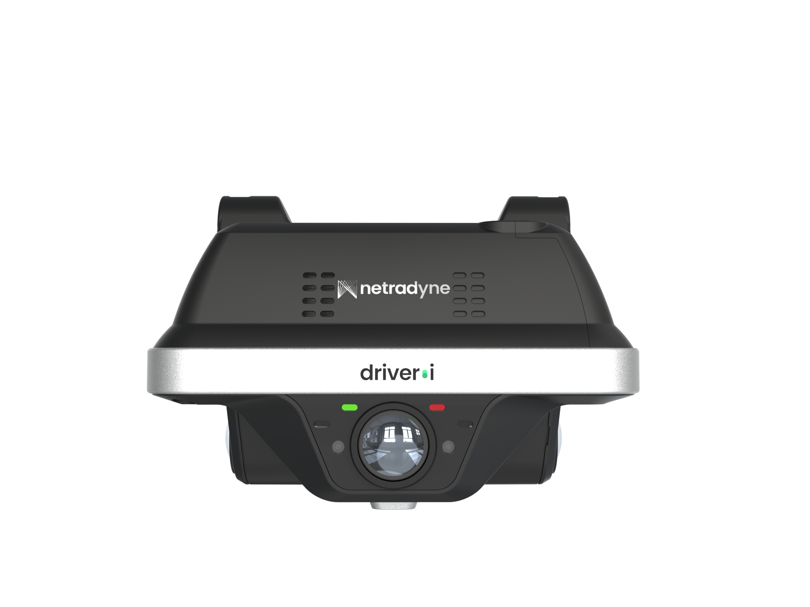
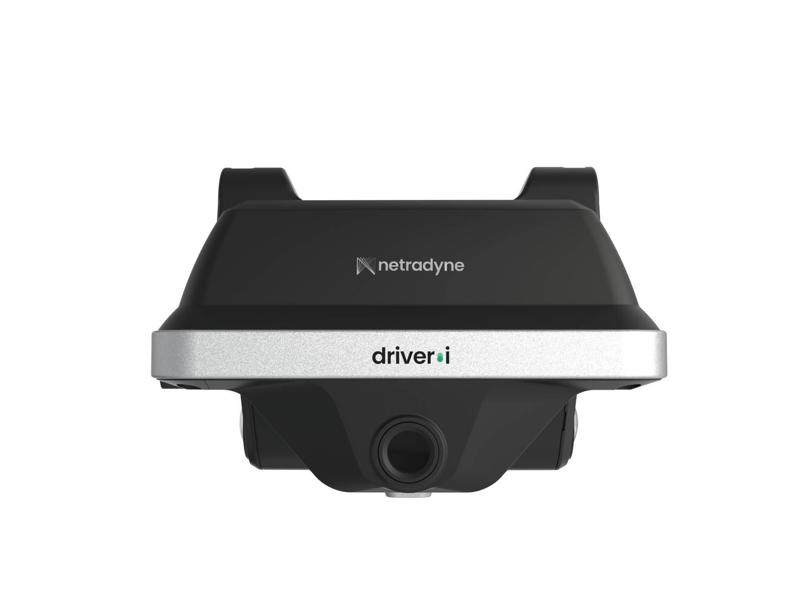
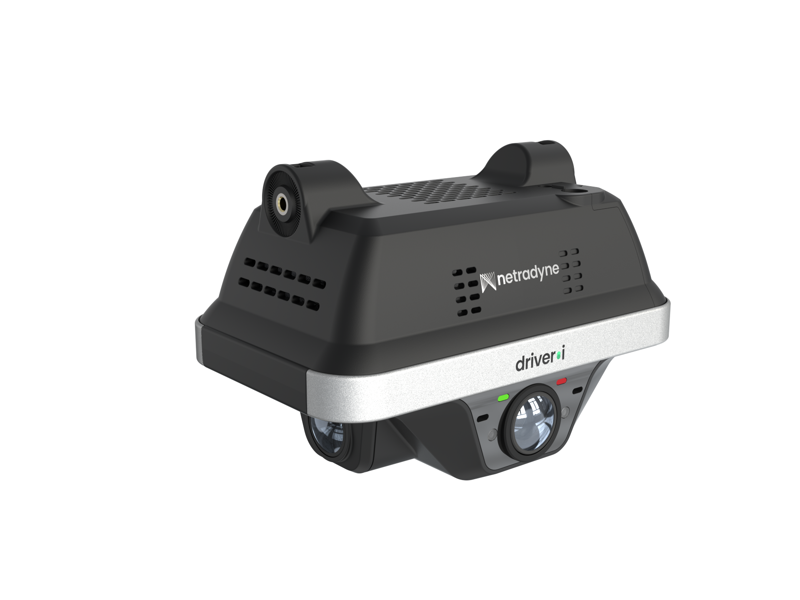
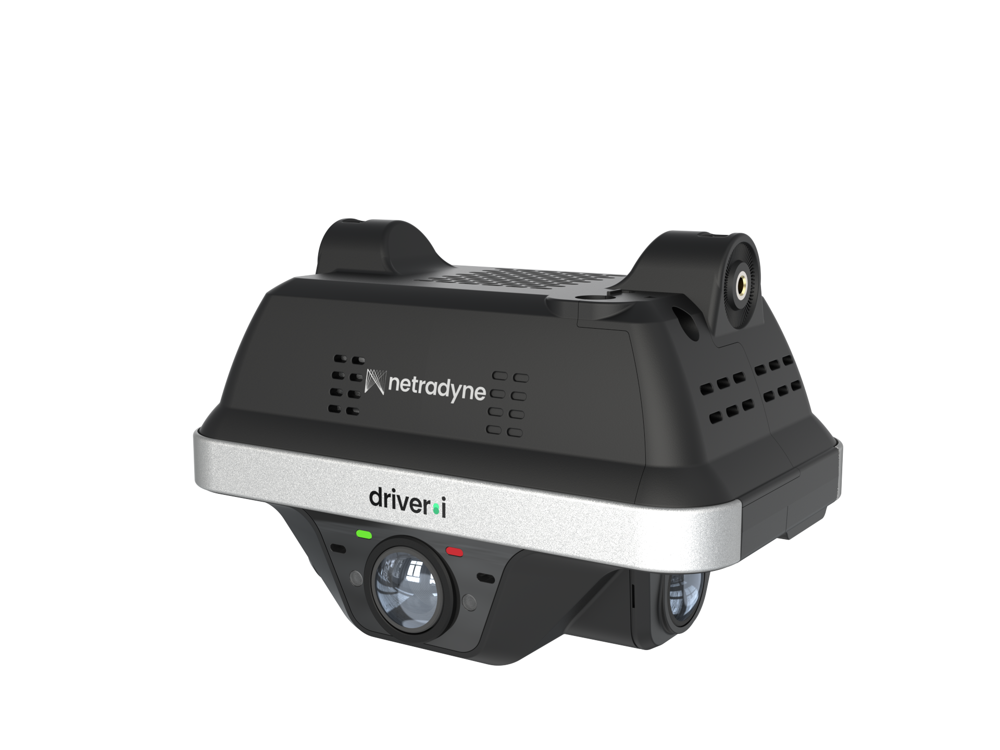
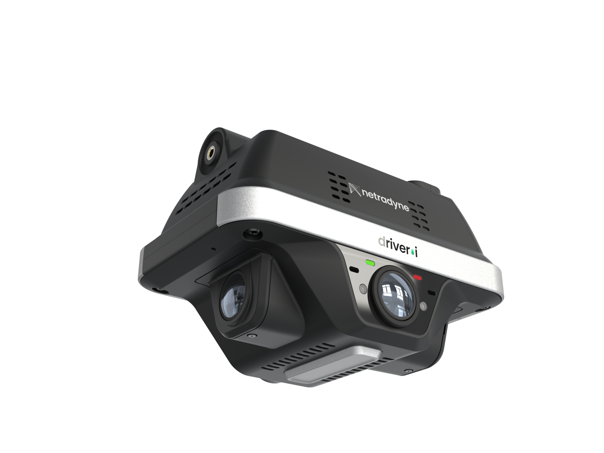
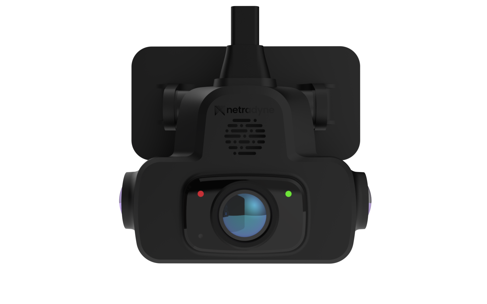
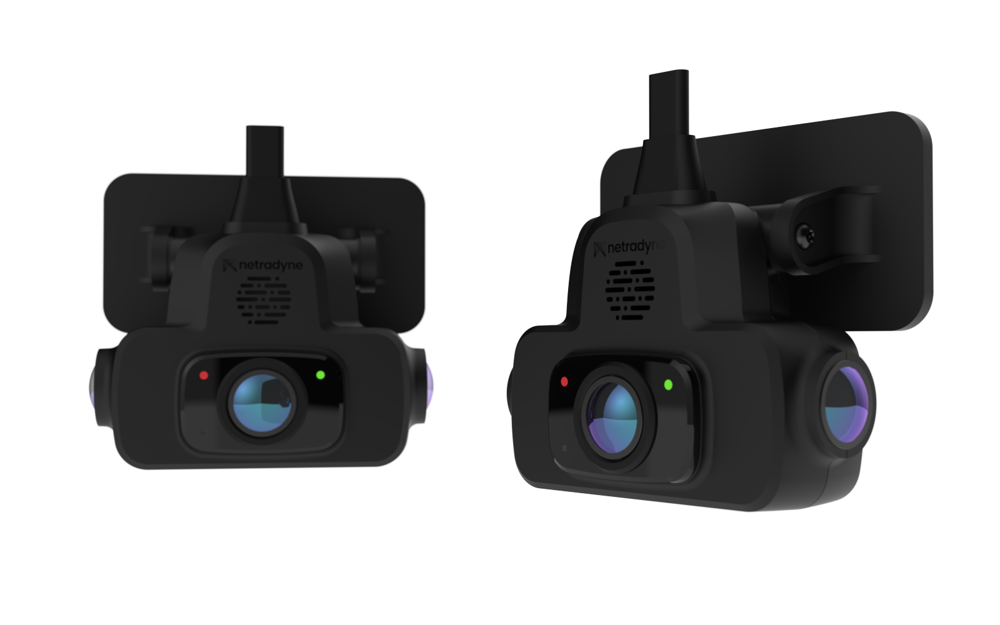
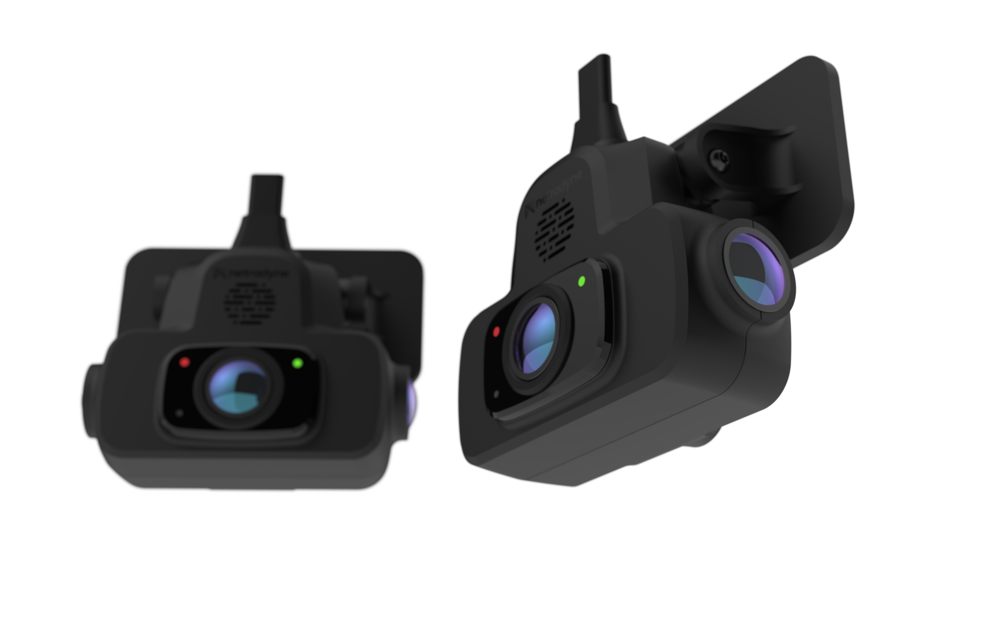
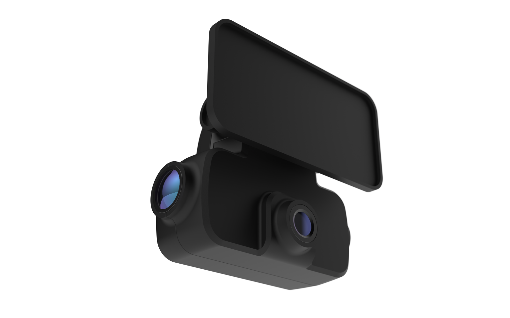
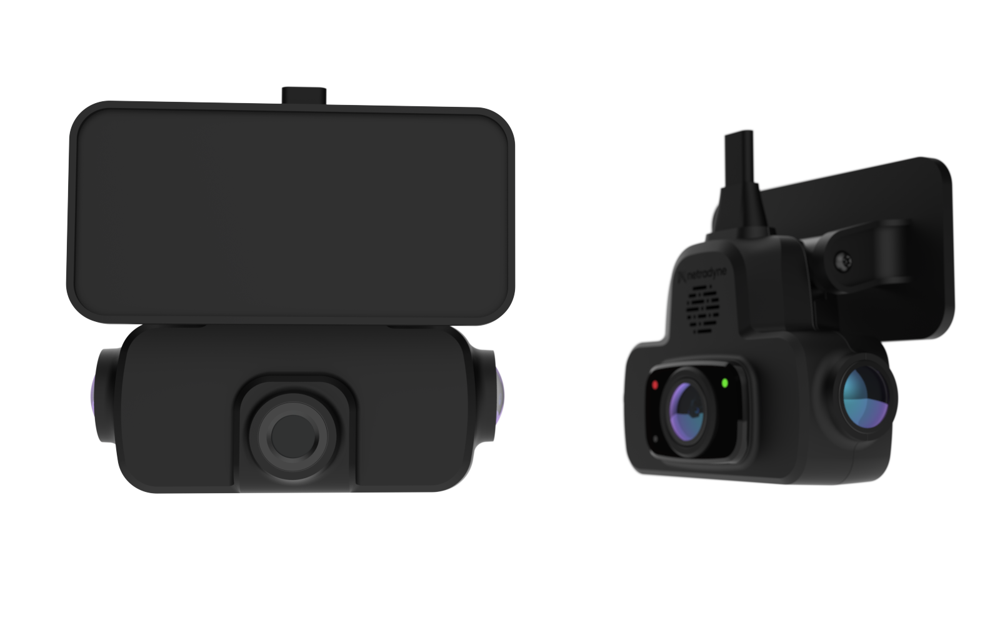

D450 · 230519_D430_rendering.9.pngFace A — straight onMain lens with red/green indicators, silver driver•i band, vented logo panel.
D450 · 230519_D430_rendering.23.pngFace B — opposite faceSingle dark lens, silver driver•i band, smooth logo panel; no red/green indicators.
D450 · 230519_D430_rendering.22.pngFace A + viewer-left sideElevated view showing Face A, left side lens, top vents and mounting ears.
D450 · 230519_D430_rendering.8.pngFace A + viewer-right sideOpposite three-quarter view showing Face A and the other side lens.
D450 · 230519_D430_rendering.11.pngFace A + left side + undersideLow-angle reference for underside, screws and side lens geometry.
DR40 · DR_41_render.3.pngFace A — straight onLens with red/green indicators, vented Netradyne face, mounting plate and upper cable.
DR40 · DR_41_render.0.pngFace A + side referenceTwo depictions of the same device: left is Face A, right is Face A with viewer-right side lens.
DR40 · DR_41_render.4.pngFace A + viewer-right side, low angleTwo depictions of one device. Use the right depiction for side lens and underside detail.
DR40 · DR_41_render.5.pngFace B + adjoining sideOpposite face with smaller lens and blank back of mounting plate; no indicator pair.
DR40 · DR_41_render.6.pngFace B and Face A comparisonLeft depiction is Face B. Right depiction is Face A and side lens. They are one device, not two products.